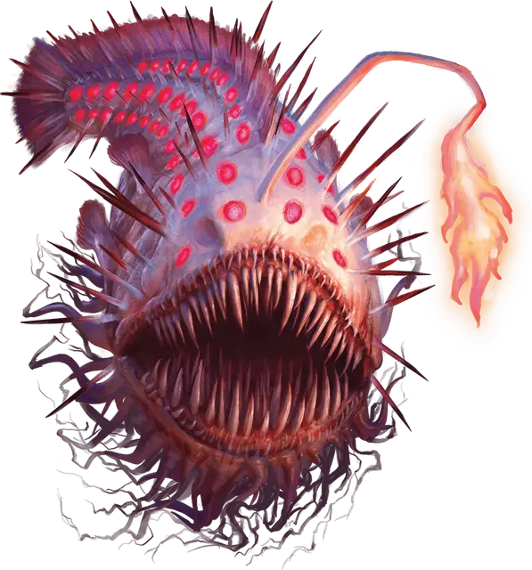

Пожиратель света
Light Devourer
Средняя Аберрация, без мировоззрения

Класс Доспеха 14
Хиты 119 (14к8 + 56)
Скорость 0 футов, плавая 30 футов
| мод | спас | ||
|---|---|---|---|
| СИЛ | 18 | +4 | +4 |
| ЛОВ | 18 | +4 | +4 |
| ТЕЛ | 18 | +4 | +4 |
| мод | спас | ||
|---|---|---|---|
| ИНТ | 2 | −4 | −4 |
| МДР | 10 | +0 | +0 |
| ХАР | 3 | −4 | −4 |
Навыки Восприятие +3, Скрытность +10
Иммунитет к урону излучение
Чувства тёмное зрение 120 футов, пассивное Восприятие 13
Опасность 6 (2300 опыта)
Бонус мастерства +3
Особенности
Подводное дыхание. Пожиратель может дышать только под водой.
Поглощение света. Если пожиратель света проводит какую-либо часть своего хода в области яркого света или получает урон излучением, он излучает тусклый свет в пределах 10 футов в течение 1 часа.
Действия
Мультиатака. Пожиратель света совершает две атаки Укусом.
Укус. . Рукопашная атака оружием: +7 к попаданию, досягаемость 5 футов, одна цель. Попадание: 21 (5к6 + 4) колющего урона или урона излучением, если пожиратель света излучает свет (см. Поглощение света).
Бонусные действия
Сияющий разряд. Если пожиратель света излучает свет (см. Поглощение света), он высвобождает свет, хранящийся в его теле, в сфере радиусом 20 футов с центром на себе, после чего перестает излучать свет. Каждое существо в этой области должно совершить спасбросок Телосложения Сл 15, получая 24 (7к6) урона излучением при провале или половину этого урона при успехе.
Описание
Пожиратель света получил свое название из-за своей способности поглощать яркий свет, будь то естественный или магический, в непосредственной близости от него. После этого существо начинает светиться, шипы, на его спине, и многочисленные иглообразные зубы в его пасти ярко горят, поскольку оно преобразует украденный свет в обжигающую энергию, которая разрывает его добычу.
Когда он не освещен, пожиратель света скрывается в темноте, исследуя океанские глубины в поисках добычи.